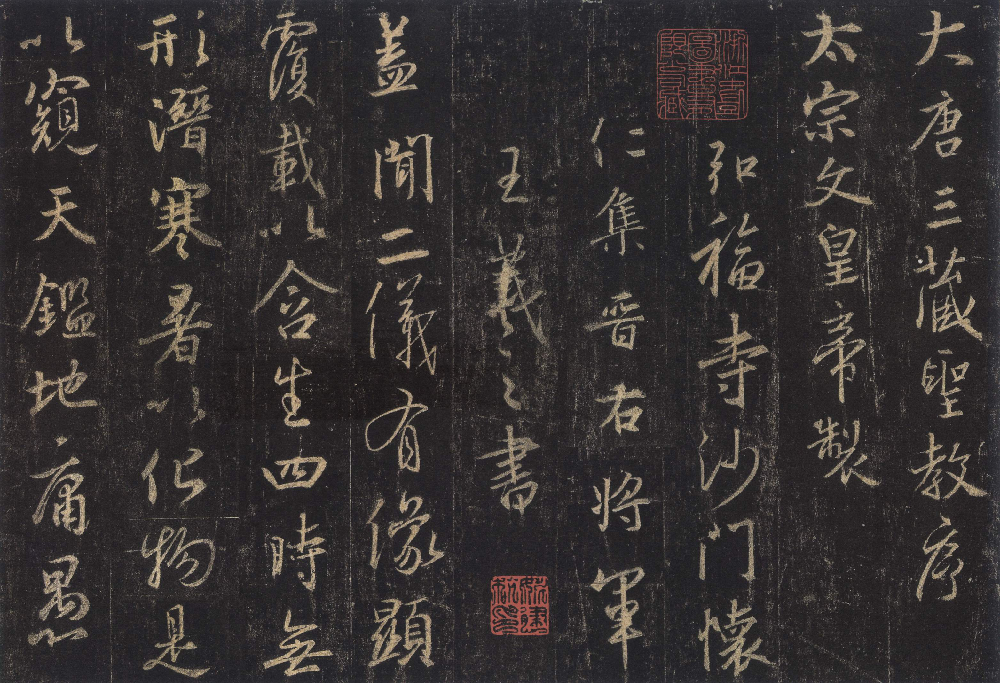
大唐三藏圣教序
太宗文皇帝制
弘福寺沙门怀
仁集。晋右将军
王羲之书。
盖闻二仪有像。显
复载以含生。四时无
形。潜寒暑以化物。是
以窥天鉴地。庸愚
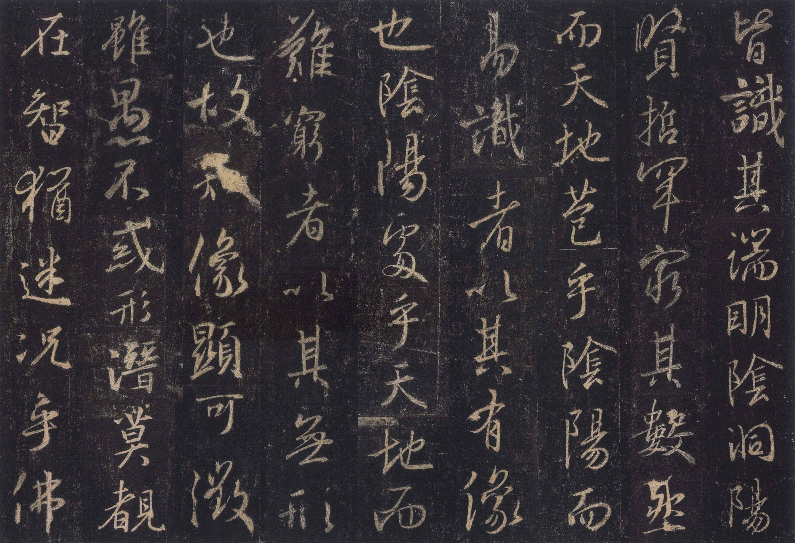
皆识其端。明阴洞阳。
贤哲罕穷其数。然
而。天地苞乎阴阳，而
易识者。以其有像
也。阴阳处乎天地。而
难穷者。以其无形
也。故知像显而微。
虽愚不或。形谮莫覩。
在智者迷。况乎佛
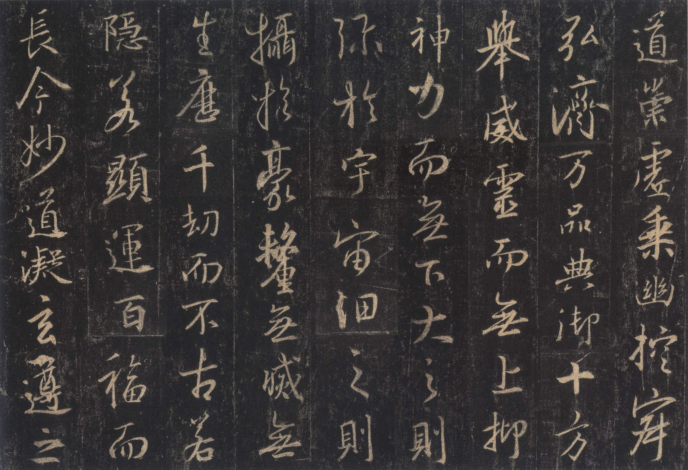
道。崇虚、乘幽，控寂。
弘济万品。典御十方。
举威灵而无上。抑
神力而无下。大之则
弥于宇宙。细之则
摄于毫厘。无灭无
生。历千劫而不古。若
隐若显。运百福而
长今。妙道凝玄。遵之
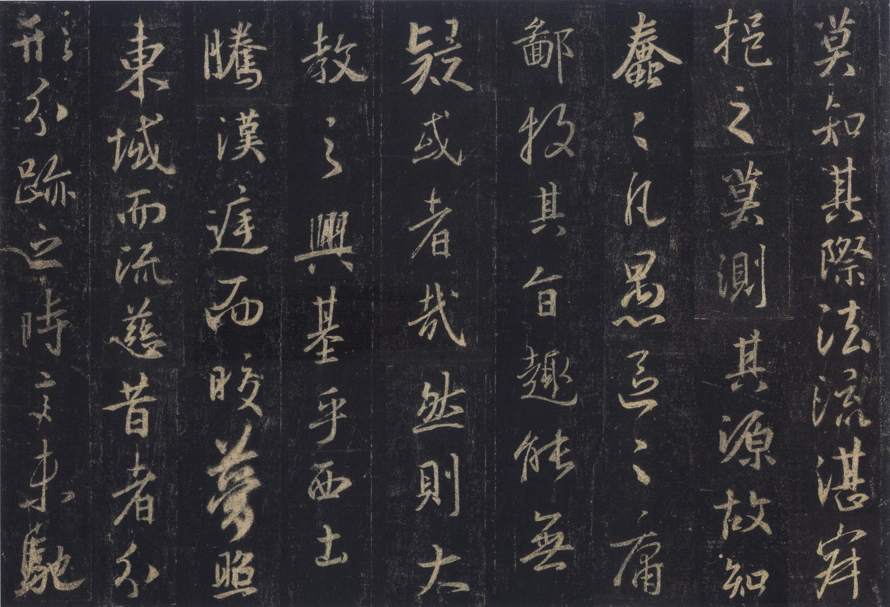
莫知其际。法流湛寂。
挹之莫测其源。故知
蠢蠢凡愚。区区庸
鄙。抆其旨趣。能无
疑或者焉。然则大
教之兴。基乎西土。
腾汉庭而皎梦。照
东城而流慈。昔者。分
形分迹之时。言未驰
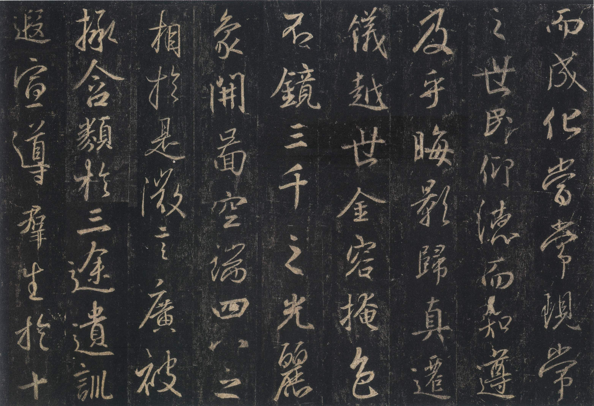
而成化。当常现常
之世。民仰德而知虚。
及乎晦影归真。迁
仪越世。金容掩色。
不镜三千之光。丽
象开图。空端四八之
相。于是微言广被。
拯含类于三途。遗训
遐宣。导群生于十
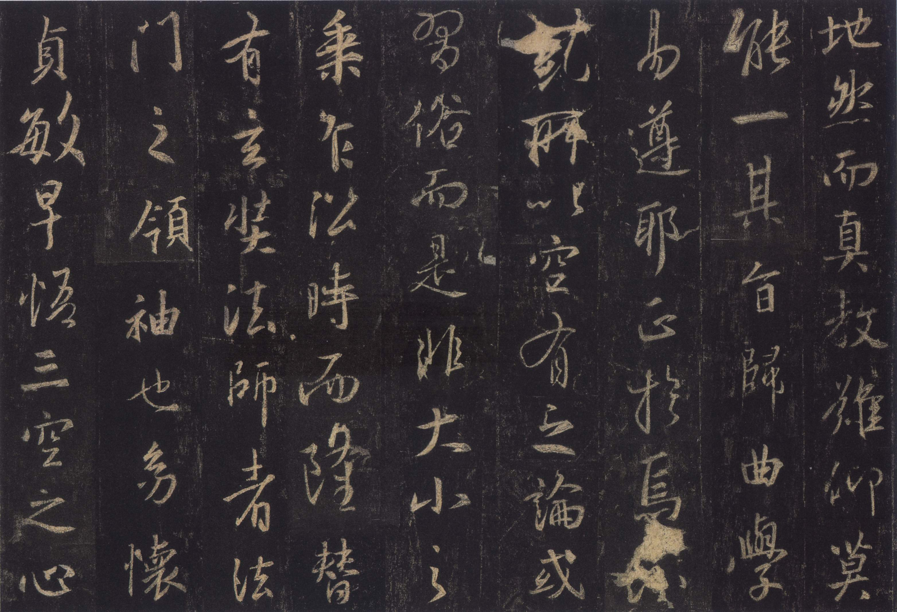
地。然而真教难仰。莫
能一其旨归、曲学
易遵。耶正于焉。分
就所以空有之论。或
习俗而是非。大小之
乘。乍沿时而隆替。
有玄奘法师者。法
门之领袖也。幼怀
贞敏。早悟三空之心。
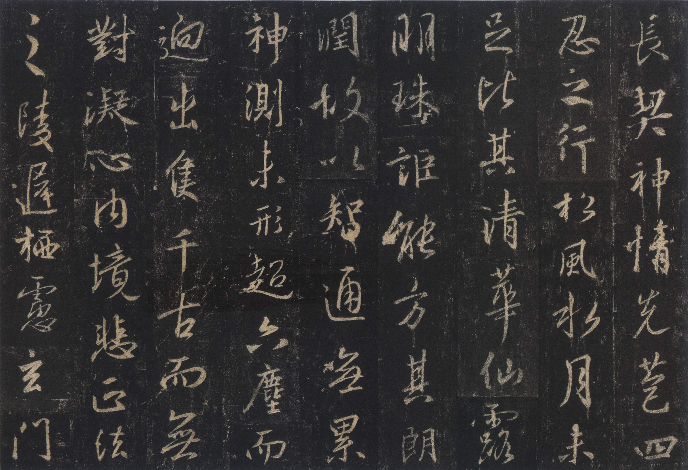
长契神情。先苞四
忍之行。松风水月。未
是比其清华。仙露
明珠。讵能方其朗
润。故以智通无累。
神测未形。超六尘而
迥出只千古而无
对。凝心内境。悲正法
之陵迟。栖虑玄门。
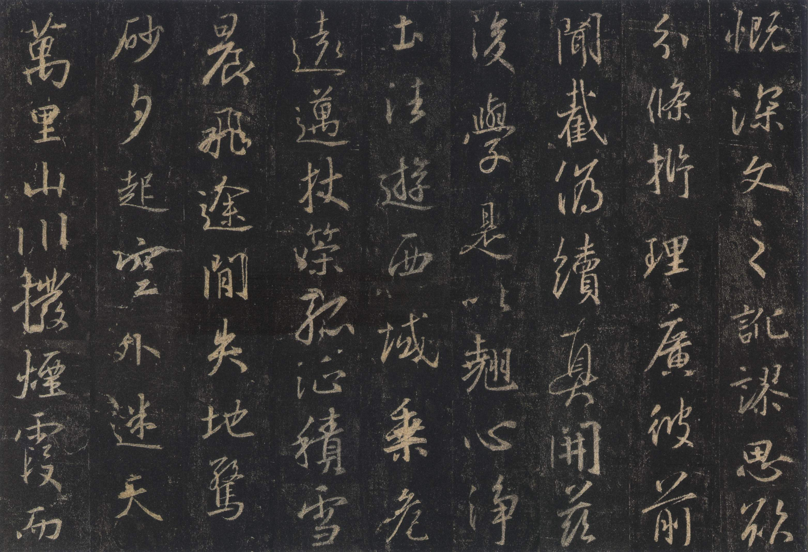
慨深文之讹谬。思欲
分条。抒理广彼前
闻。截伪存真。开兹
后学。是以翘心净
土。法游西域。乘危
远迈。杖策孤证。积雪
晨飞。途闻失地。鹜
砂夕起。空外迷天。
万里山川。拨云霞而
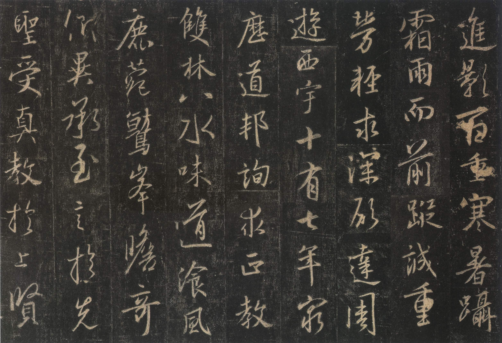
进影。百重寒暑。蹑
霜雨而前踪。诚重
劳轻求。深弘达周。
游西宇十有七年。穷
历道邦。询求正教。
双林八水。味道餐风。
鹿菀鹫峰。瞻奇
仰异。承至言于先
圣。受真教于上贤。
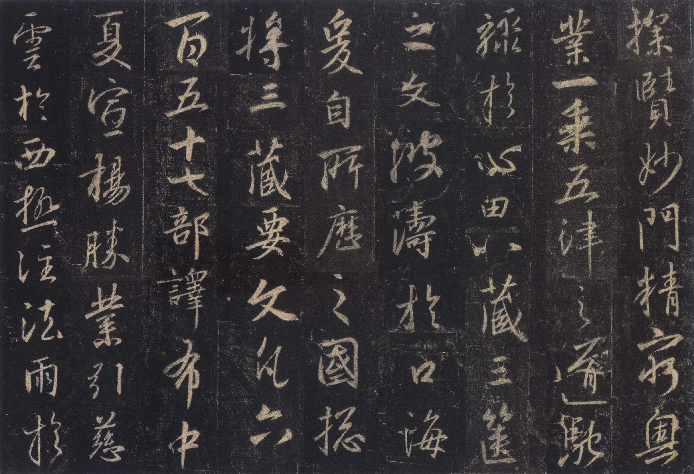
探赜妙门。精穷奥
业。一乘五津之道。驰
骤于心田。八藏三箧
之文。波涛于口海。
爰自所历之国。总
将三藏要文。凡六
百五十七部。译布中
夏。宣扬胜业。引慈
云于西极。注法雨于
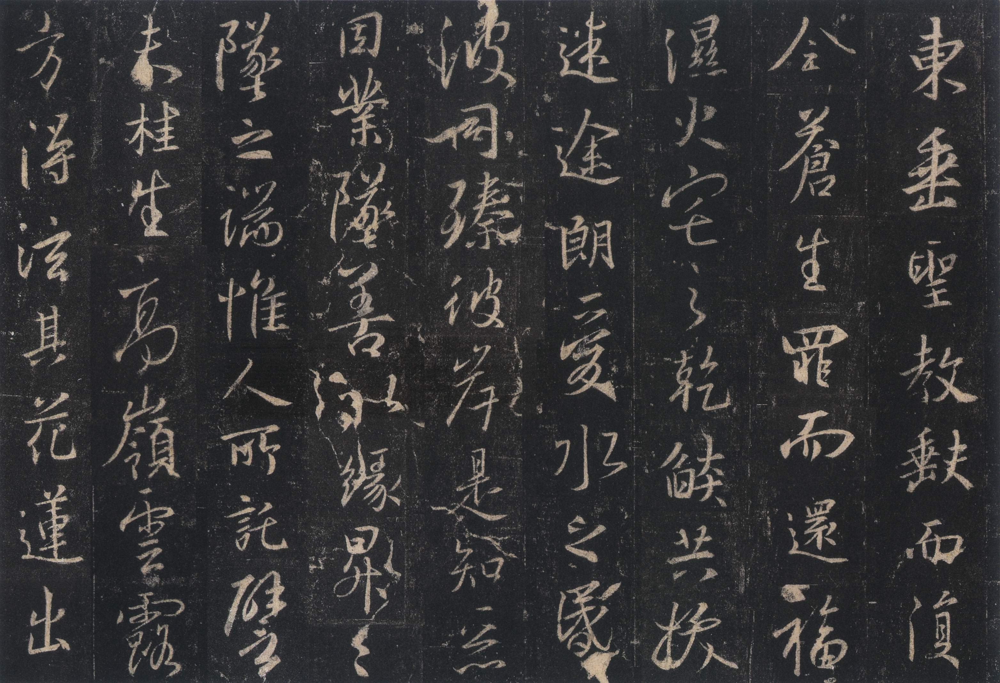
东垂。圣教缺而复
合。苍生罪而还福。
湿火宅之干焰。共拔
迷途。朗爰水之昏
波。同臻彼岸。是知。恶
因业坠。善以缘升。今
坠之端。惟人所托。壁
未桂生高岭。云露
方得泫其花。莲出
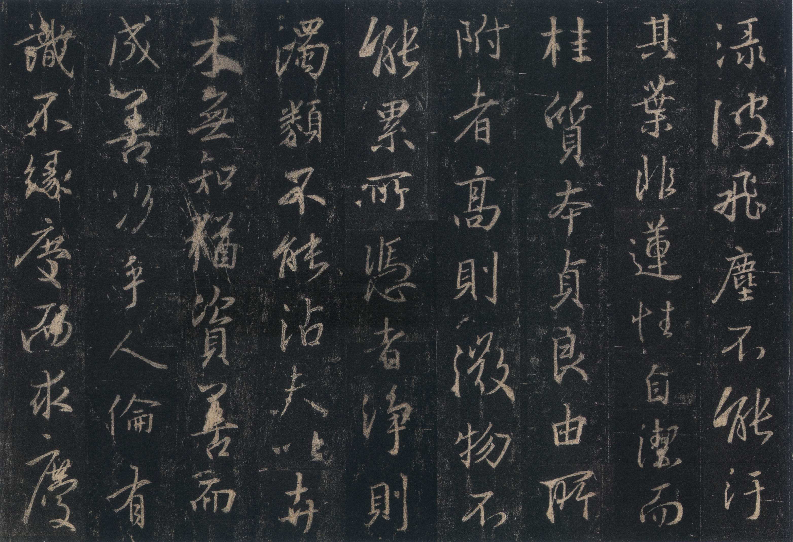
渌波。飞尘不能污
其叶。非莲性自洁。而
桂质本贞。良田所
附者高。则微物不
能累。所凭者净。则
浊类不能沾。夫以卉
木无知。犹资善而
成善。况乎。人伦有
识。不缘庆而求庆。
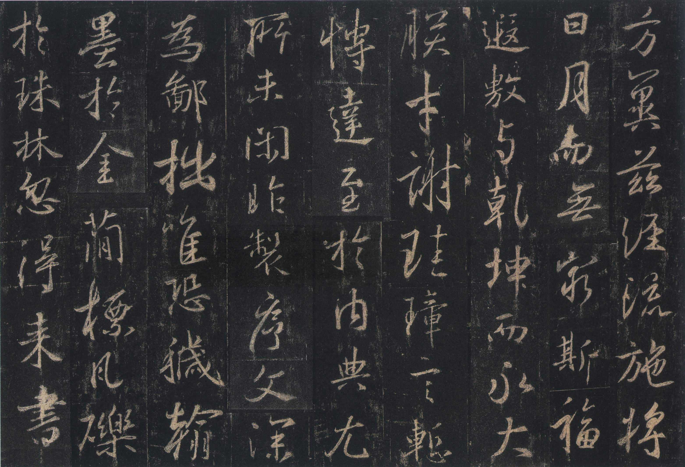
方翼兹经流施。将
日月而无穷。斯福
遐敷与乾坤而永大。
朕才谢珪璋。言惭
博达。至于内典。尤
所未闲。昨制序文。涂
为鄙拙。唯恐秽翰
墨于金简。标瓦砾
于森林。忽得来书。
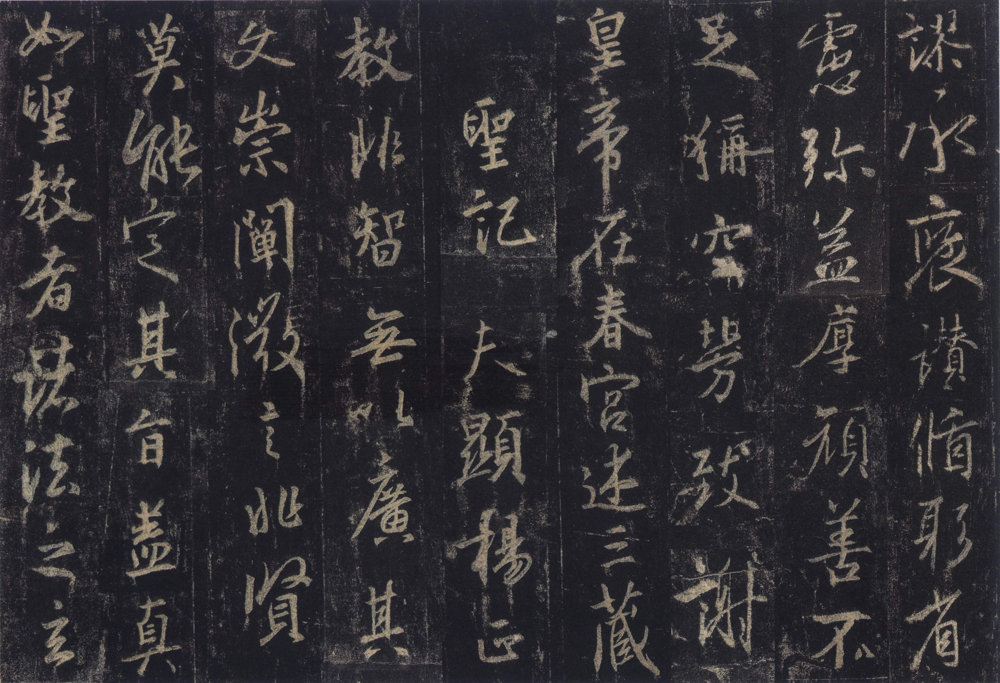
谬承褒赞。循躬省
虑。弥盖厚颜。善不
足称，空劳致谢。
皇帝在春宫述三藏。
圣记。夫显扬正
教，非智无以广其
文。崇阐微言。非贤
莫能定其旨。盖真
如圣教者。诸法之玄
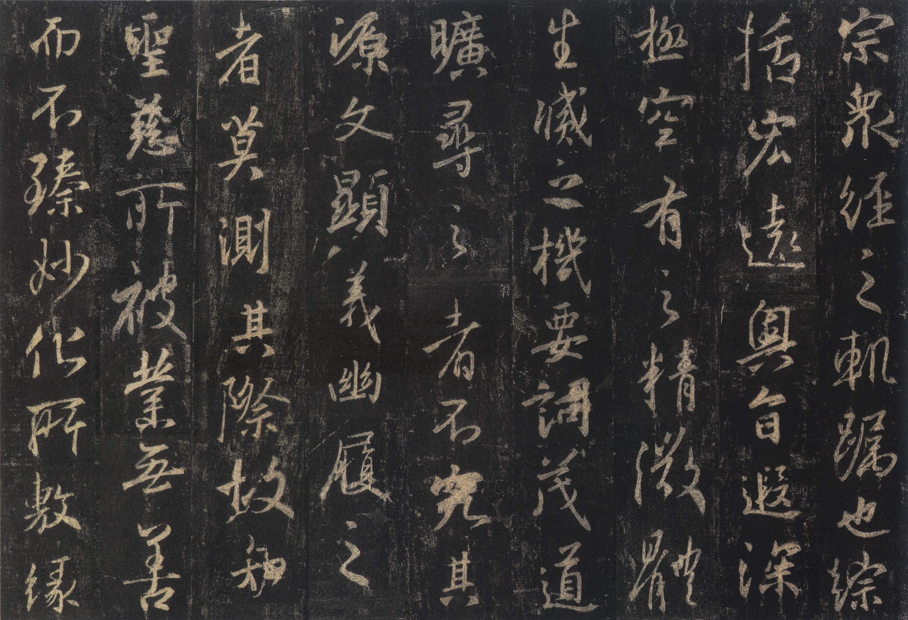
宗。众经之辄躅也。综
括宏远。奥旨遐深。
极空有之精微。体
生减之机要。词茂道
旷。寻之者不究其
源。文显义幽。履之
者莫测其际。故知
圣慈所被。业无善
而不臻。妙化所敷。缘
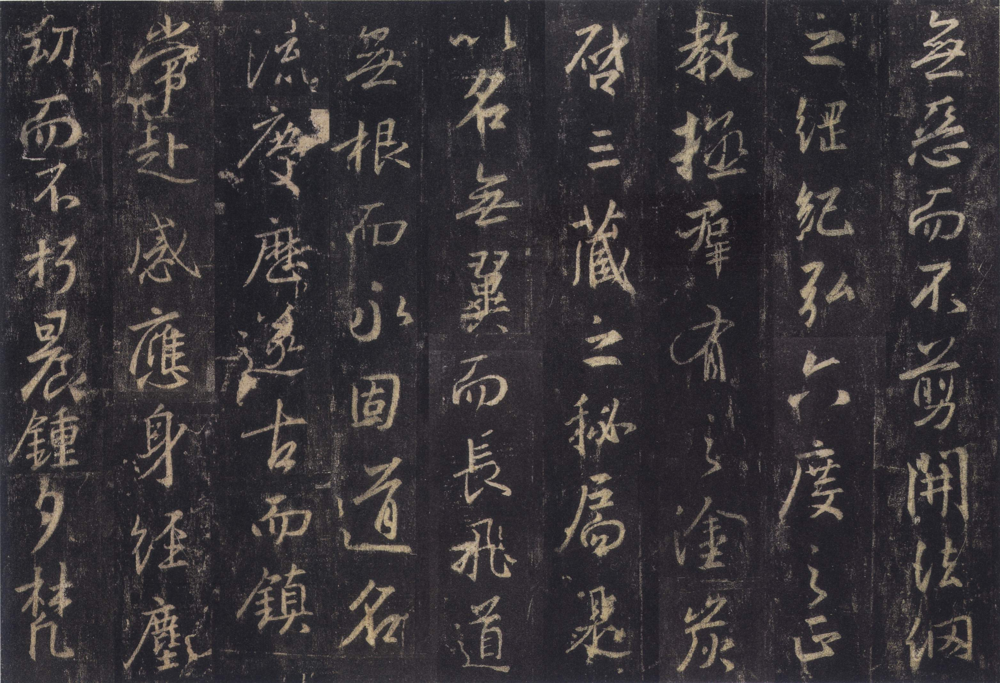
无恶而不翦。开法纲
之纲纪。弘六度之正
教。拯群有之涂炭。
启三藏之秘扃是
以。名无翼而长飞。道
无根而永固。道名
流庆。历遂古而镇
常。赴感应身。经尘
劫而不朽。晨钟夕梵。
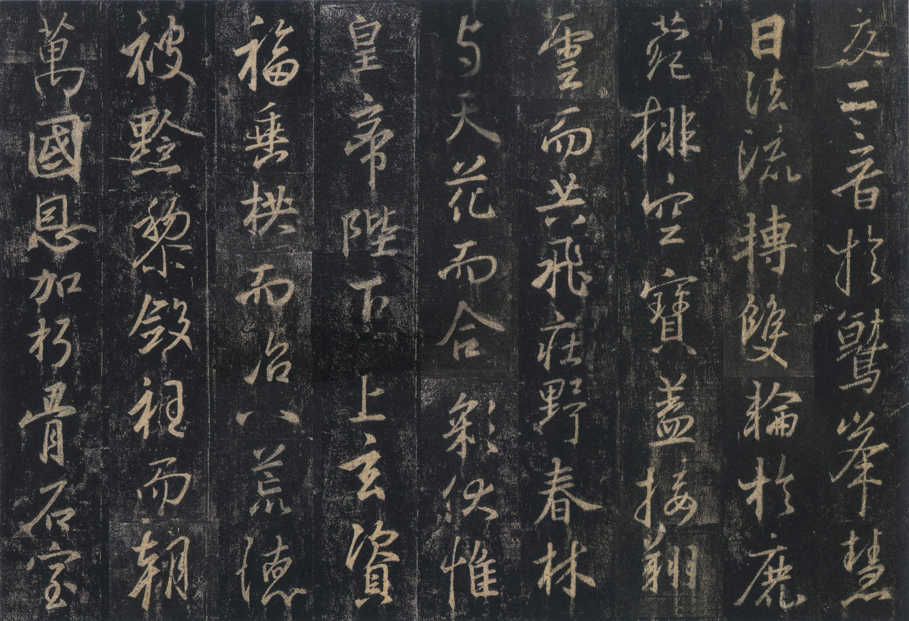
交二音于鹫峰。慧
日法流。转双轮于鹿
菀。排空宝盖。接翔
云而共飞。庄野春林。
与天花而合彩。伏惟
皇帝陛下。上玄资
福。垂拱而治八荒。德
被黔黎。敛衽而朝
万国。恩加朽骨。石室
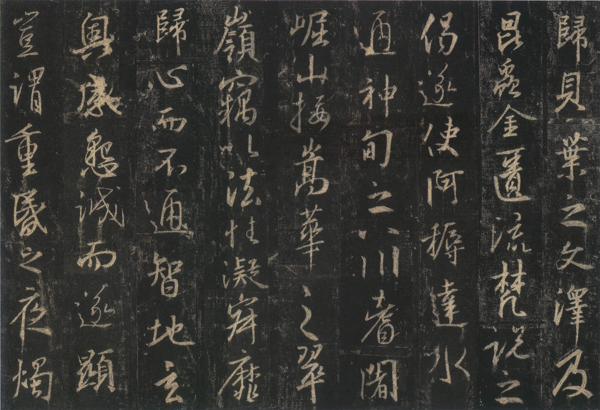
归贝叶之文。泽其
昆虫。金匮流梵说之
偈。遂使阿（辱）达水。
通神旬之八川。耆阇
崛山。接嵩华之翠
岭。窃以性凝寂。麋
归心而不通。智地玄
奥。感恳诚而遂显。
岂谓重昏之夜。烛
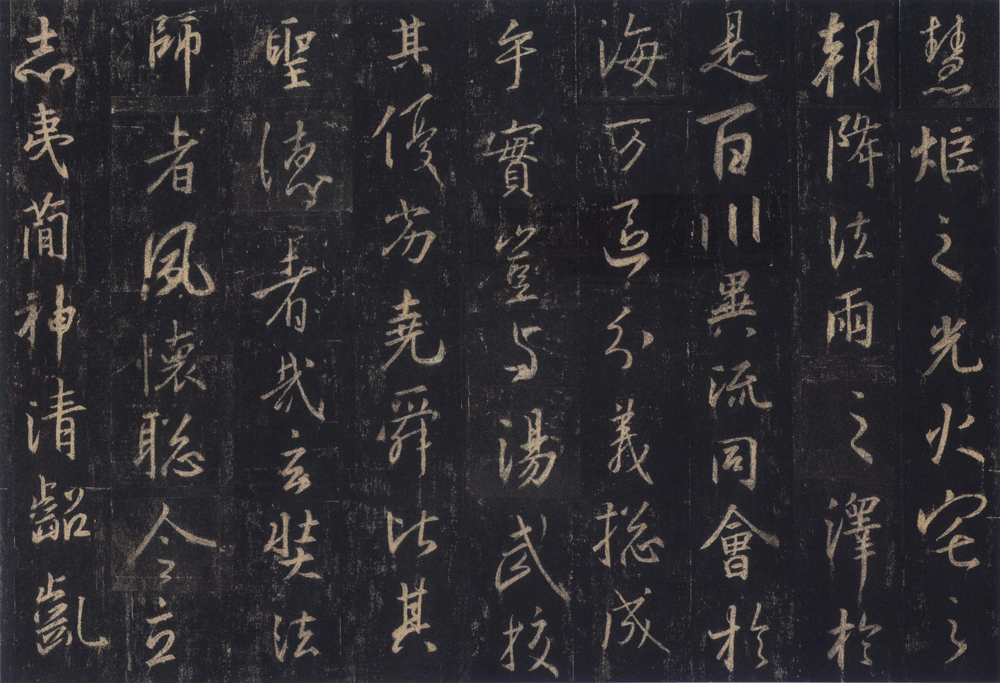
慧炬之光。火宅之
朝。降法雨之泽。于
是百川异流。同会于
海。万区分义。总成
乎实。岂与汤武校
其优劣。尧舜比其
圣德者哉。玄奘法
师者。夙怀聪令。立
志夷简。神清龆龀
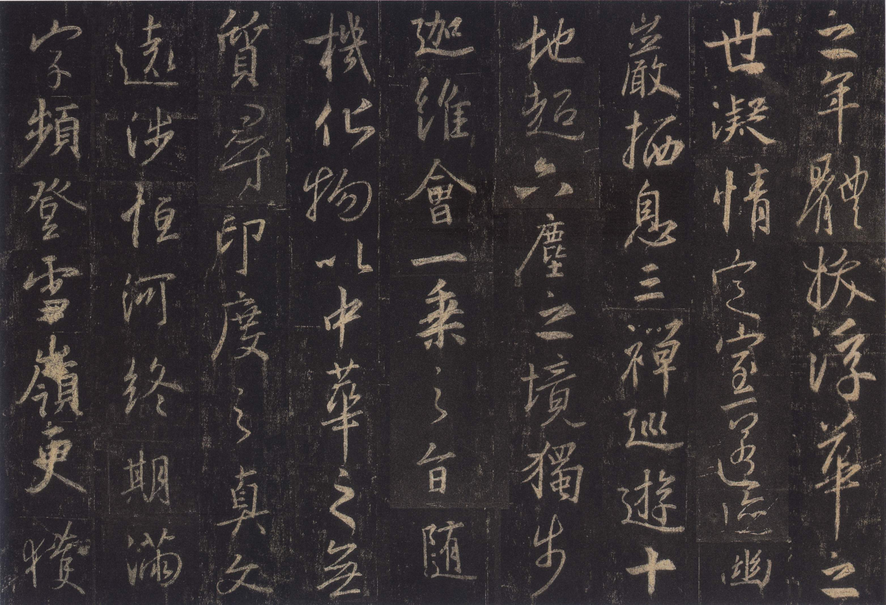
之年。体拔浮华之
世。凝情定室。匿迹幽
巖。栖息三禅。巡游十
地，超六尘之境。独步
迦维。会一乘之旨。随
机化物。以中华之无
质。寻印度之真文。
远涉恒河。终期满
字。频登雪岭。更获
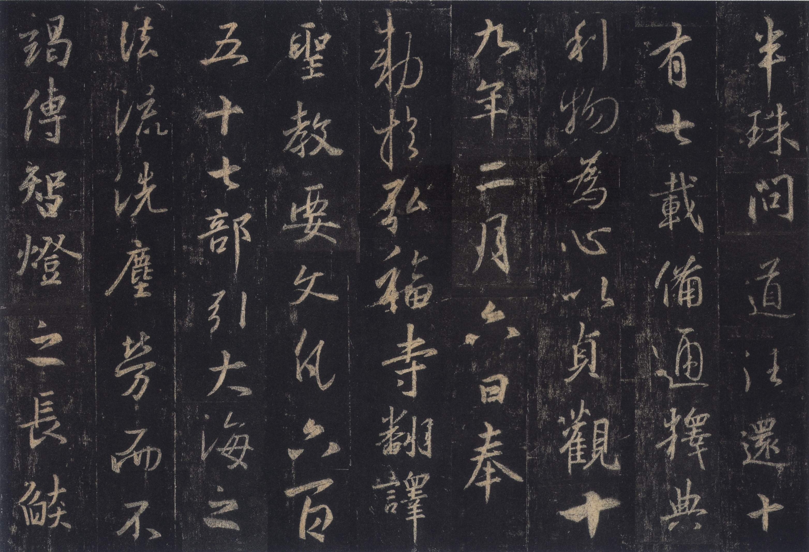
半珠。问道法还。十
有七载。备通释典。
利物为心。以贞观十
九年九月六日奉。
敕于弘福寺。翻译
圣教要文凡六百
五十七部。引大海之
法流。洗尘劳而不
竭。传智灯之长焰。
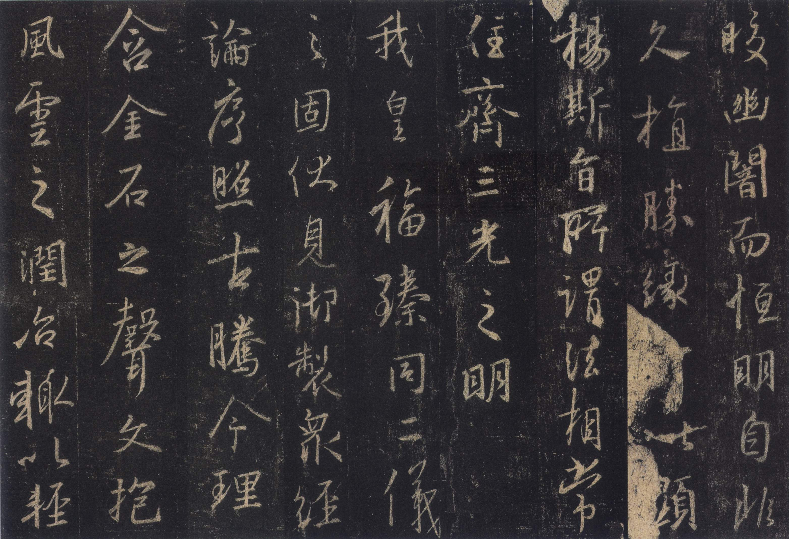
皎幽闇而恒明。自非
久值胜缘。何以显
扬斯旨。所谓法相常
住。齐三光之明。
我皇福臻。同二仪
之固。伏见御制。众经
论序。照古腾今。理
含金石之声。文抱
风云之润。治辄以轻
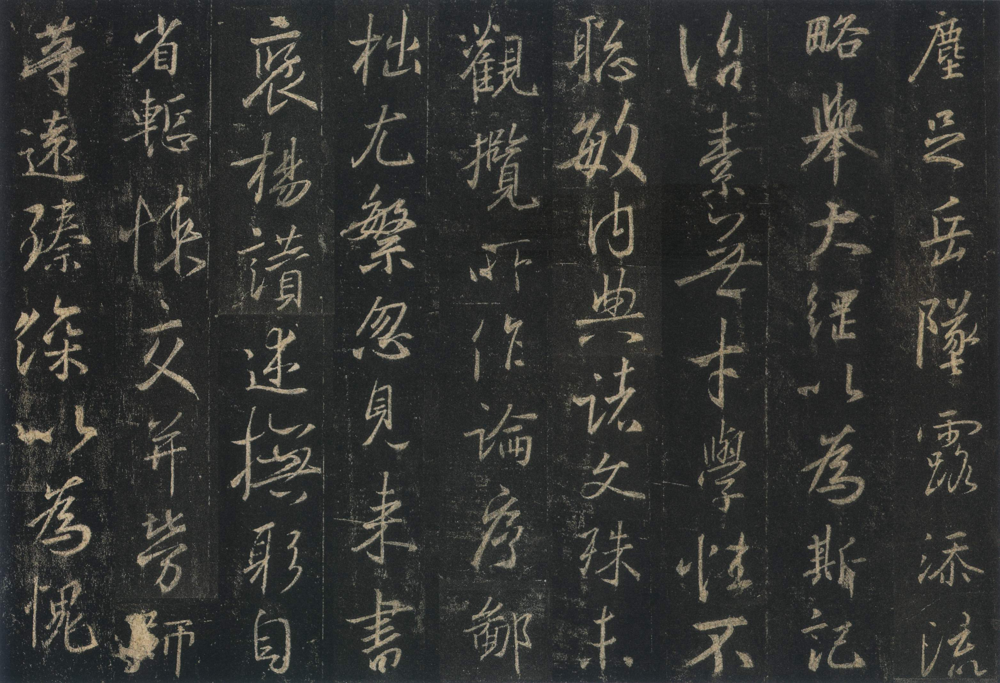
尘足岳。坠露添流。
略举大纲。以为斯记。
治素无才学。性不
聪敏。内典诸文。殊未
观览。所作论序。鄙
拙尤繁。忽见来书。
褒扬赞述。抚躬自
省。惭悚交并。劳师
等远臻。深以为愧。
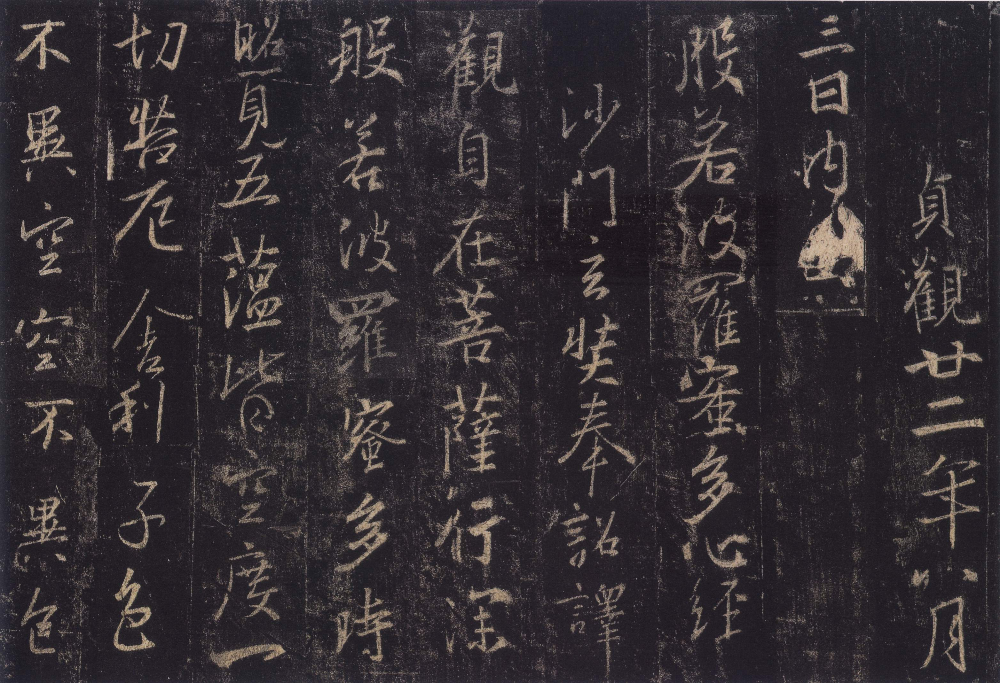
贞观廿二年八月
三日内府。
般若波羅蜜多心經
沙门玄奘奉诏譯
觀自在菩薩。行深
般若波羅蜜多時。
照見五蘊皆空。度一
切苦厄。舍利子。色
不異空。空不異色。
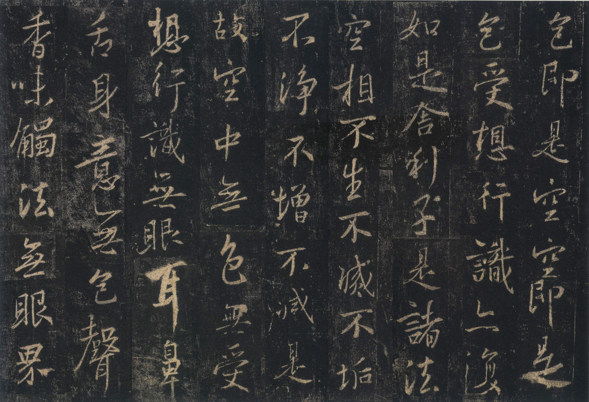
色即是空。空即是
色。受想行識亦復
如是。舍利子。是諸法
空相。不生不滅。不垢
不淨不增不減。是
故空中。無色。無受
想行識。無眼耳鼻
舌身意。無色聲
香味觸法。無眼界。
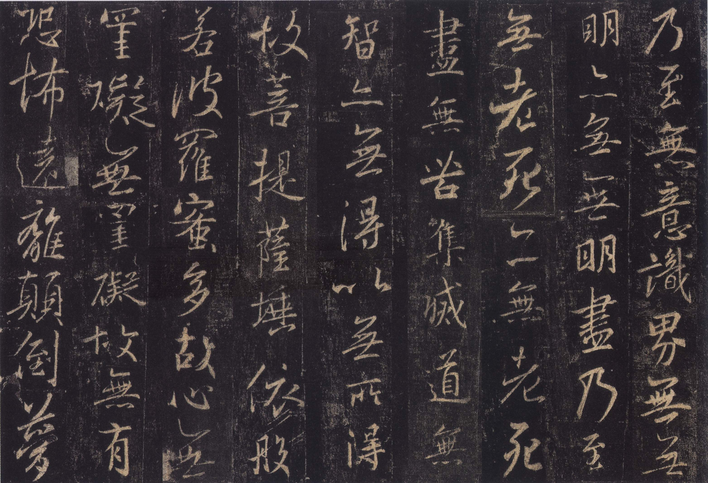
乃至無意識界。無無
明。亦無無明盡。乃至
無老死。亦無老死
盡。無苦集滅道。無
智亦無得。以無所得
故。菩提薩埵。依般
若波羅蜜多故。心無
罣礙。無罣礙故。無有
恐怖。遠離顛倒夢
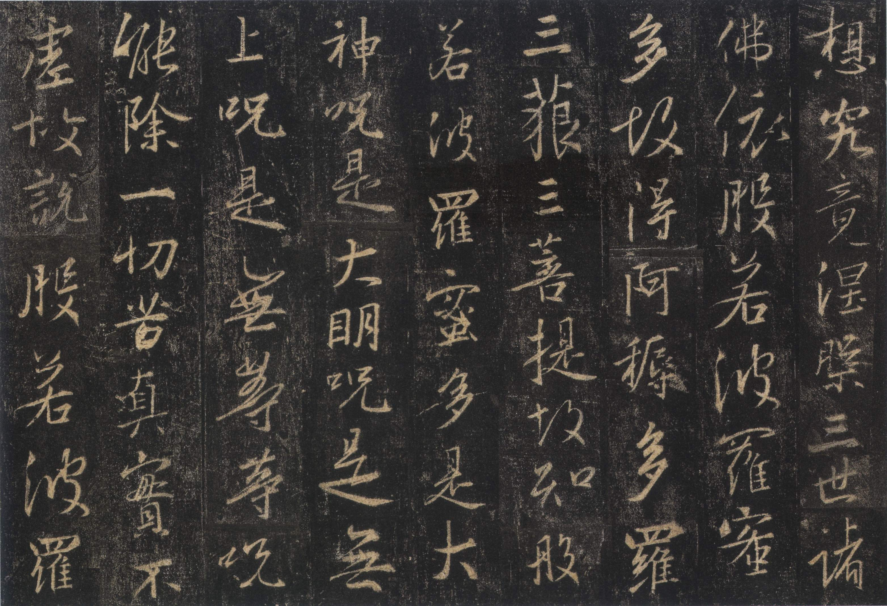
想。究竟涅槃。三世諸
佛。依般若波羅蜜
多故。得阿耨多羅
三藐三菩提。故知般
若波羅蜜多。是大
神咒。是大明咒是無
上咒。是無等等咒。
能除一切苦。真實不
虛故。說般若波羅
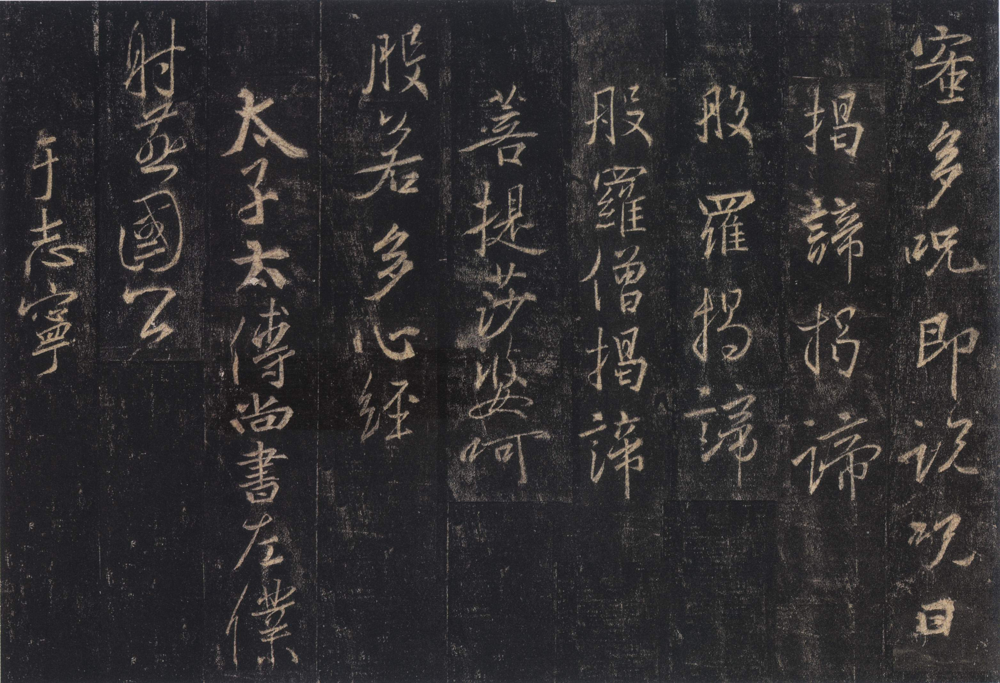
蜜多咒即說咒曰
揭帝揭帝
般羅揭帝
般羅僧揭帝
菩提莎訶
般若多心經
太子太傅尚书左仆
射燕国公
于志宁
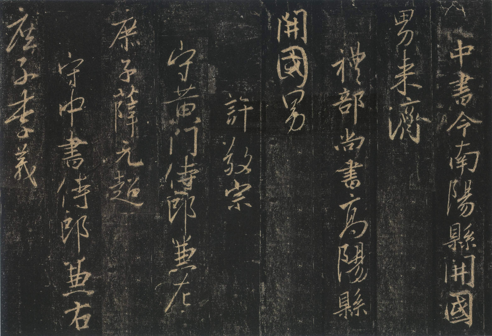
中书令南阳县开国
男来济
礼部尚书高阳县
开国男
许敬宗
守黄门侍郎兼左
庶子薛元超
守中书侍郎兼右
庶子李义
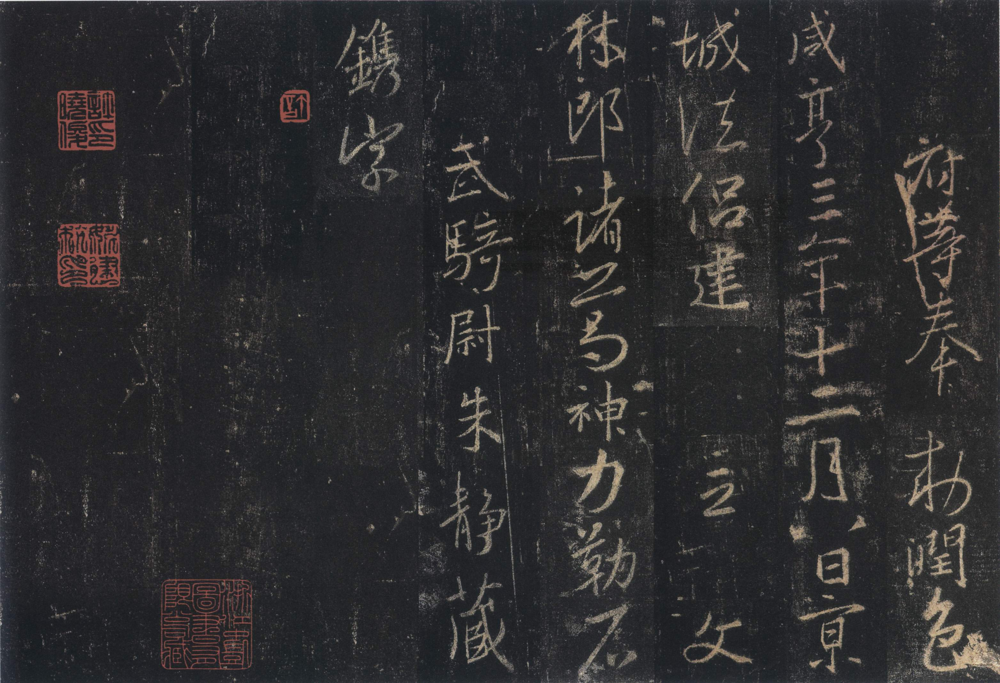
府等奉敕润色
咸亨三年十二月八日京
城法侣建立文
林郎诸葛神力勒石
武骑尉朱静藏
镌字